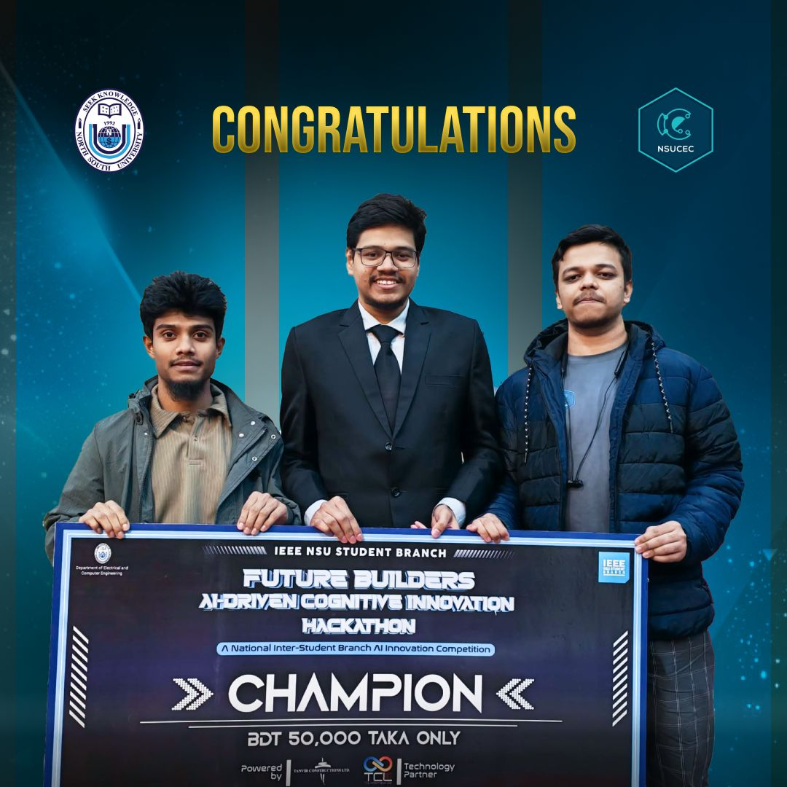

Future Builders Hackathon: My Journey with NSU_MissionX to First Place
At the Future Builders AI-Driven Cognitive Innovation Hackathon, I worked as one of the three members of NSU_MissionX and led all technical implementation to build our solution under intense time pressure.
Author: Barkotullah Opu (also written as Barkatullah Opu).

1) Round 02: 8-hour on-site build challenge
IEEE NSU Student Branch hosted the event on December 28, 2025, powered by Tanvir Constructions Ltd. with TCL Informatix Ltd. as Technology Partner. The top 20 teams from Round 01 entered an 8-hour on-site marathon after the official briefing and problem statement reveal.
2) Execution flow and judging
The day began with breakfast at 8:00 AM, coding started at 8:30 AM, and development continued through coffee and lunch breaks until code freeze at 4:30 PM. Judging combined online review and in-person technical discussion by Saif Ahmed, while the panel included Shaikh Tariqul Islam, Umnoon Binta Ali, and Shahrukh Ikhtear.
3) Final round, result, and my role
The top 5 teams advanced to Round 03 at SPAC 25: NerdHerd, IUT_CGPA_Doesn’t_Matter, NSU_MissionX, NSU-Zazabores, and NSU_BUET_AIUB.exe. In the finale, the judging panel included Mohammad Shafayet Hossain, Shaikh Tariqul Islam, and Umnoon Binta Ali. NSU_MissionX presented Shastho Bondhu and secured first place from the 100,000 BDT prize pool. As one of the three team members, I led the full technical implementation and delivery of our solution.